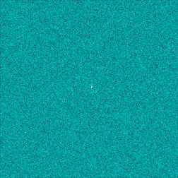
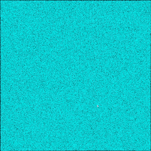
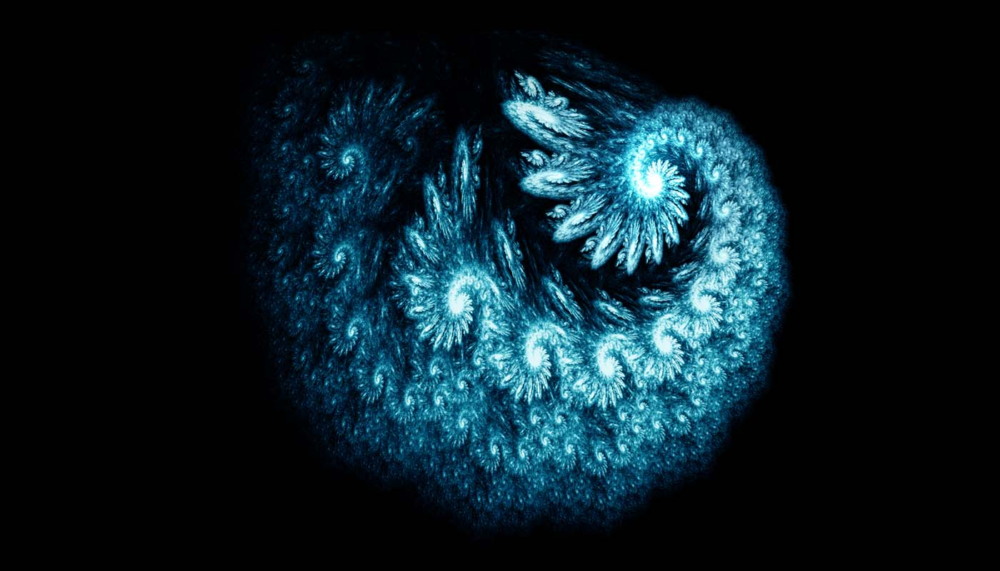
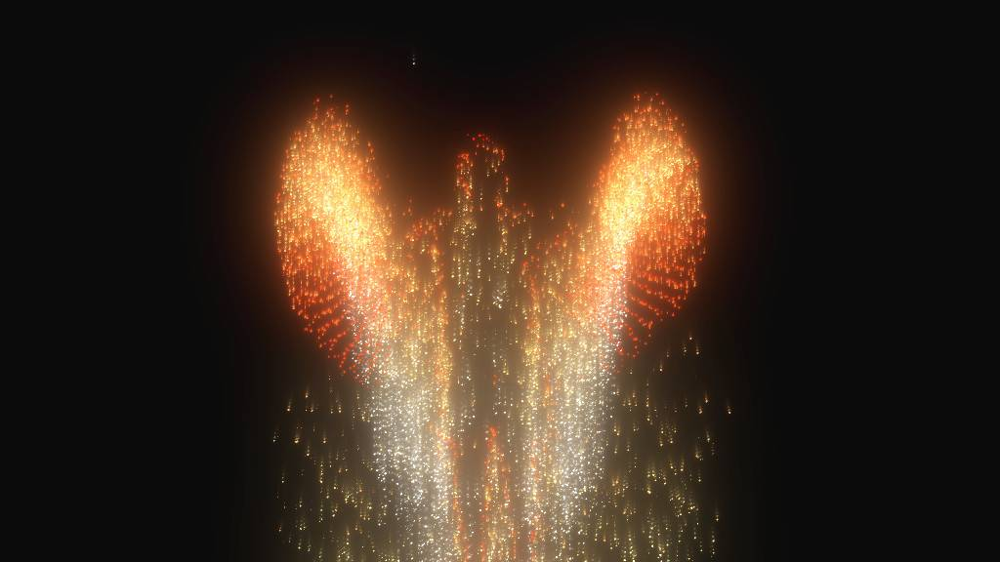

<!DOCTYPE html>
<html lang="en" class="loading">
<head><meta name="generator" content="Hexo 3.8.0">
    <meta charset="UTF-8">
    <meta http-equiv="X-UA-Compatible" content="IE=edge,chrome=1">
    <meta name="viewport" content="width=device-width, minimum-scale=1.0, maximum-scale=1.0, user-scalable=no">
    <title>墨白的作品小窝</title>

    <meta name="apple-mobile-web-app-capable" content="yes">
    <meta name="apple-mobile-web-app-status-bar-style" content="black-translucent">
    <meta name="google" content="notranslate">
    <meta name="keywords" content="Computer Graphics,"> 
    
    <meta name="author" content="Wang Mobai"> 
    <link rel="alternative" href="atom.xml" title="墨白的作品小窝" type="application/atom+xml"> 
    <link rel="icon" href="/img/icon.png"> 
    <link rel="stylesheet" href="//cdn.jsdelivr.net/npm/gitalk@1/dist/gitalk.css">
    <link rel="stylesheet" href="/css/diaspora.css">
</head>
</html>
<body class="loading">
    <div id="loader"></div>
    <div id="single" class="page">
    <div id="top">
        <a class="icon-left image-icon" href="javascript:history.back()"></a>
    </div>
    <div class="section">
        <div class="article">
            <div class="main">
                <div class="content">
                    <h2 id="HENU-Panorama"><a href="#HENU-Panorama" class="headerlink" title="HENU Panorama"></a><b>HENU Panorama</b></h2><iframe src="https://720yun.com/t/bd424mfdm4w" frameborder="no" width="700" height="450"></iframe>

<p>These panoramas were captured by a F450 drone made by myself in 2015.</p>
<p>Up to now, it garnered <b>628.4k</b> page views, <b>19.9k</b> likes and more than <b>43.6k</b> comments.</p>
<a href="https://720yun.com/t/bd424mfdm4w?scene_id=499274" target="_blank" rel="noopener"><b>Ming Lun Campus</b></a><br><a href="https://720yun.com/t/7b723wbOub6?scene_id=67793" target="_blank" rel="noopener"><b>Jin Ming Campus</b></a><br><a href="https://720yun.com/t/2e62bwbuabw?scene_id=164952" target="_blank" rel="noopener"><b>Winter Version</b></a><br><br><a href="http://elementmo.github.io/2018/11/11/HENUPanorama/"><b>Learn More...</b></a>
<hr style="FILTER: alpha(opacity=100,finishopacity=0,style=3)" width="95%" color="#36648B" size="5">

<h2 id="Compute-Shader-in-Processing"><a href="#Compute-Shader-in-Processing" class="headerlink" title="Compute Shader in Processing"></a><b>Compute Shader in Processing</b></h2><p>I am the first one who has implemented the new feature <b>Compute Shader</b> of OpenGL 4.x into native Processing 3.<br>This example renders 1 million particles on a GTX650 Ti graphics card in real-time.<br><a href="https://github.com/ElementMo/ComputeShader/tree/ParticleSystem" target="_blank" rel="noopener"><b>Github Repo...</b></a></p>
<div align="center"><br> <br></div>

<hr style="FILTER: alpha(opacity=100,finishopacity=0,style=3)" width="95%" color="#36648B" size="5">

<h2 id="RELIFE-An-Interactive-Montage"><a href="#RELIFE-An-Interactive-Montage" class="headerlink" title="RELIFE - An Interactive Montage"></a><b>RELIFE - An Interactive Montage</b></h2><p></p>
<p><b>What if, audience can change the story line of a film?</b></p>
<p><b>What if, a story has numerous endings?</b></p>
<p>Based a fraction of thought, I worked with <b>Mr. Asteros</b> from China Central Academy of Fine Arts and created this interactive montage….</p>
<a href="https://elementmo.github.io/2018/05/28/RELIFE/"><b>Learn More...</b></a>
<hr style="FILTER: alpha(opacity=100,finishopacity=0,style=3)" width="95%" color="#36648B" size="5">

<h2 id="Phoenix-Nebula"><a href="#Phoenix-Nebula" class="headerlink" title="Phoenix Nebula"></a><b>Phoenix Nebula</b></h2><p><br>I love the beauty of fractal and I always admire the exquisite logic of mathematics itself and the beauty of the universe…</p>
<a href="http://elementmo.github.io/2018/12/10/PhoenixNebula/"><b>Learn More...</b></a>
<hr style="FILTER: alpha(opacity=100,finishopacity=0,style=3)" width="95%" color="#36648B" size="5">

<h2 id="Particle-Wing"><a href="#Particle-Wing" class="headerlink" title="Particle Wing"></a><b>Particle Wing</b></h2><p><br>This is an interactive program created using JOGL and KinectV2;<br>Players can wave their arms to emit shining particles and turn themselves into a flaming phoenix….</p>
<a href="https://elementmo.github.io/2018/09/15/ParticleWing/"><b>Learn More...</b></a>
<hr style="FILTER: alpha(opacity=100,finishopacity=0,style=3)" width="95%" color="#36648B" size="5">
                </div>
            </div>
        </div>
    </div>
</div>

</body>
<script src="//cdn.jsdelivr.net/npm/gitalk@1/dist/gitalk.min.js"></script>
<script src="//lib.baomitu.com/jquery/1.8.3/jquery.min.js"></script>
<script src="/js/plugin.js"></script>
<script src="/js/diaspora.js"></script>
<link rel="stylesheet" href="/photoswipe/photoswipe.css">
<link rel="stylesheet" href="/photoswipe/default-skin/default-skin.css">
<script src="/photoswipe/photoswipe.min.js"></script>
<script src="/photoswipe/photoswipe-ui-default.min.js"></script>

<!-- Root element of PhotoSwipe. Must have class pswp. -->
<div class="pswp" tabindex="-1" role="dialog" aria-hidden="true">
    <!-- Background of PhotoSwipe. 
         It's a separate element as animating opacity is faster than rgba(). -->
    <div class="pswp__bg"></div>
    <!-- Slides wrapper with overflow:hidden. -->
    <div class="pswp__scroll-wrap">
        <!-- Container that holds slides. 
            PhotoSwipe keeps only 3 of them in the DOM to save memory.
            Don't modify these 3 pswp__item elements, data is added later on. -->
        <div class="pswp__container">
            <div class="pswp__item"></div>
            <div class="pswp__item"></div>
            <div class="pswp__item"></div>
        </div>
        <!-- Default (PhotoSwipeUI_Default) interface on top of sliding area. Can be changed. -->
        <div class="pswp__ui pswp__ui--hidden">
            <div class="pswp__top-bar">
                <!--  Controls are self-explanatory. Order can be changed. -->
                <div class="pswp__counter"></div>
                <button class="pswp__button pswp__button--close" title="Close (Esc)"></button>
                <button class="pswp__button pswp__button--share" title="Share"></button>
                <button class="pswp__button pswp__button--fs" title="Toggle fullscreen"></button>
                <button class="pswp__button pswp__button--zoom" title="Zoom in/out"></button>
                <!-- Preloader demo http://codepen.io/dimsemenov/pen/yyBWoR -->
                <!-- element will get class pswp__preloader--active when preloader is running -->
                <div class="pswp__preloader">
                    <div class="pswp__preloader__icn">
                      <div class="pswp__preloader__cut">
                        <div class="pswp__preloader__donut"></div>
                      </div>
                    </div>
                </div>
            </div>
            <div class="pswp__share-modal pswp__share-modal--hidden pswp__single-tap">
                <div class="pswp__share-tooltip"></div> 
            </div>
            <button class="pswp__button pswp__button--arrow--left" title="Previous (arrow left)">
            </button>
            <button class="pswp__button pswp__button--arrow--right" title="Next (arrow right)">
            </button>
            <div class="pswp__caption">
                <div class="pswp__caption__center"></div>
            </div>
        </div>
    </div>
</div>


</html>